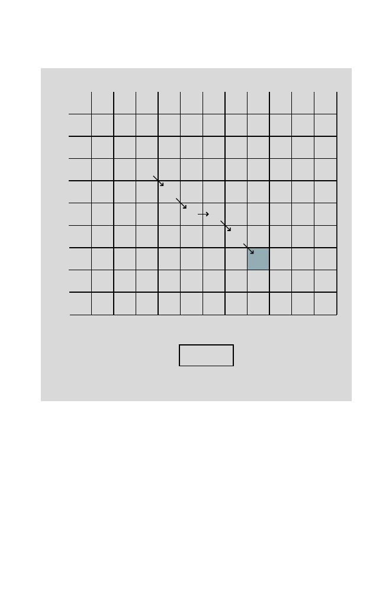

6.5 Number of Possible Global Alignments
157
0 1 2 3 4 5 6 7 8 9 10
- G G C T C A A T C A
0 - 0 0 0 0 0 0 0 0 0 0 0
1 A 0 0 0 0 0 0 2 2 0 0 2
2 C 0 0 0 2 0 2 0 1 1 2 0
3 C 0 0 0 2 1 2 1 0 0 3 1
4 T 0 0 0 0 4 2 1 0 2 1 2
5 A 0 0 0 0 2 3 4 3 2 1 3
6 A 0 0 0 0 0 1 5 6 4 2 3
7 G 0 2 2 0 0 0 3 4 5 3 1
8 G 0 2 4 2 0 0 1 2 3 4 2
The resulting local alignment is enclosed in the box below:
A:
A C C T - A A G G -
B
:
G G C T C A A T C A
Most local alignment programs only report the aligned regions of
A
and
B
,
that is, the sequences shown in the box above.
6.5 Number of Possible Global Alignments
We have shown how to identify rigorously the highest-scoring alignment. Ob-
viously, for strings of lengths
n
and
m
, we had to compute three scores going
into (
n
−
1)(
m
−
1) cells and to take a maximum. This means that 4
nm
com-
putations were required (including the trivial first row and first column). In
the “big
O
” notation (Section 4.3), this means that computation time will be
O
(
mn
).
Now we ask a separate question: How many
possible
global alignments
are there for two strings of lengths
m
and
n
? This is the same thing as ask-
ing how many different paths there are through the alignment matrix (ex-